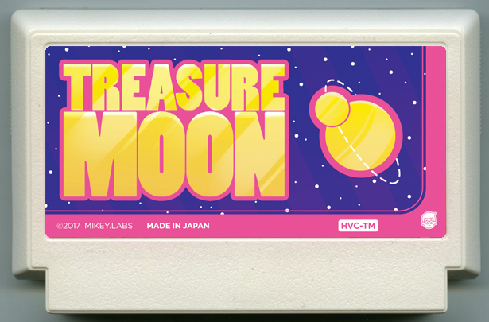

Survival Moon
Survival Moon is a single player 2d survival horror game where the player has crashed on an abandoned space facility, and must collect parts of their ship to escape the shadow monsters that hunt them.
Details
Time: Nov 2018
Team Size: 5
Tools: Unity
Role: Technical Designer, Programmer
Play on browser
Survival Moon is a single player 2d survival horror game where the player has crashed on an abandoned space facility, and must collect parts of their ship to escape the shadow monsters that hunt them.
Details
Time: Nov 2018
Team Size: 5
Tools: Unity
Role: Technical Designer,
Programmer
Contributions
- AI Design
- Level Design Tools
- Ship Piece Collecting System
- Playtesting
Survival Moon was a game that we completed within 1 week. I worked alongside another programmer and level designer to develop the ai enemies, and their pathfinding.
After completing the AI, I completed various other mechanics for the game, such as the carrying of objects and the attaching of ship parts, as well as adding some UX elements, like the flickering flashlight. I also integrated all the sounds that the sound designer created. Near the end, I was in charge of playtesting the game, fixing any bugs that I found.
We have showcased this game at multiple events, with postitive feedback from many of the players. Most players felt scared, or adreneline rushes, while playing.
Design

Initially, we used the My Famicase Exhibition to look for quick inspiration. We discovered this cover, called "Treasure Moon", and started to design around a treasure collecting game. Once we started to design the enemies, we discovered that they were scary to play against. Thus, we aimed towards a more horror-like game, and changed the name called our game "Survival Moon".
Our goal was to quickly develop game that had a clear objective, while also being quick to pick up and learn. Sticking to our original idea, from Treasure Moon, we decided that the objective of the game was to collect objects scattered around the map. After deciding on a more horror-esque genre, we made those pieces parts of your ship, with your goal being to escape the monsters on the moon.
Enemy AI
When I started to design the AI, I listed possible behaviours that I thought would match our game. As we aimed for a more barbaric enemy, I decided on more simplistic behaviours, matching a creature that did not think before it acted. We also wanted the player to feel weak when an enemy started to chase them.
Originally, I wanted enemies to hide in grates, or pipes, in order to give more of a jumpscare when the player encountered them. However, after some playtesting, I determined that this made the game too frustrating, as players wouldn't be able to react fast enough. We wanted the player to feel like dying did not feel like they were cheated, and thus we removed this mechanic.
My plan of attack for the ai was to design the navigation first. As we were aiming for a more barbaric enemy, I decided that it shouldn't be predicting your movements, and rather move directly towards you. However, I ran into an issue when navigating the ai around corners.
When the ai would track the players, and follow them, they would run into the walls when players went around corners. I solved this by tracking the player's last known location instead, and when they round that corner they will search for the player again.


{kind=link}
{kind=link}
{kind=link}
Takeaways
Although the development for this game was only a week, much was learned from this experience, and through it's multiple playtest. Things such as "Players not reading the instructions", and "Players not tracking their stats during gameplay" were things that we had not thought too much about during development. I expected players to spend time reading the instructions, or watching the cutscenes, as those were important parts of the game. However, most players would skip over the instructions, or do something else during the cutscene. Simple fixes could have been implemented to account for these, which is what I have learned from playtesting.
Through the development side, I was able to learn more about how AI and game systems function, which prompted me to research more into these topics. As a result, my understanding of them has become stronger.
{kind=link}
{kind=link}
{kind=link}